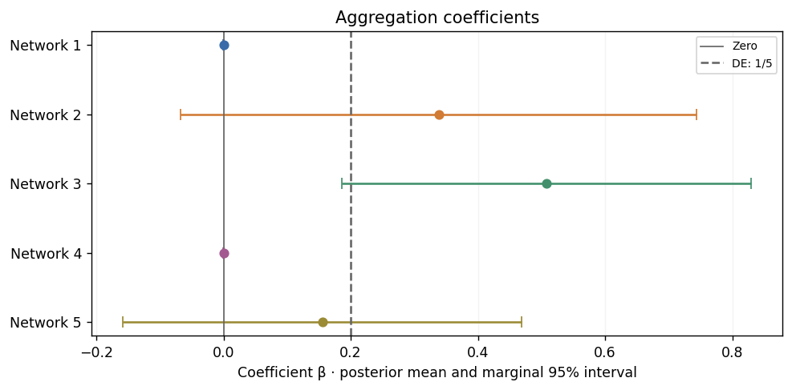
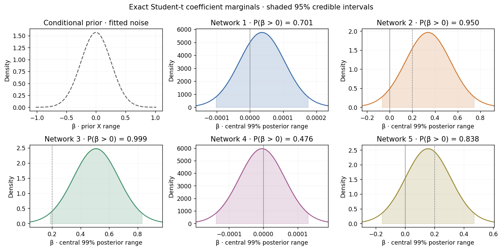
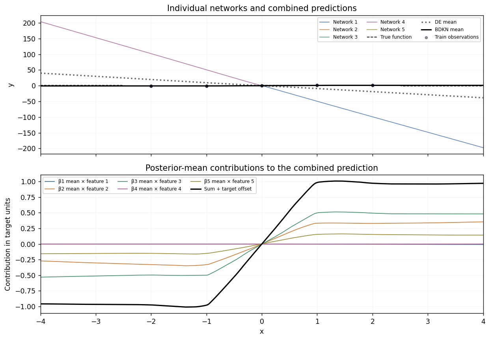
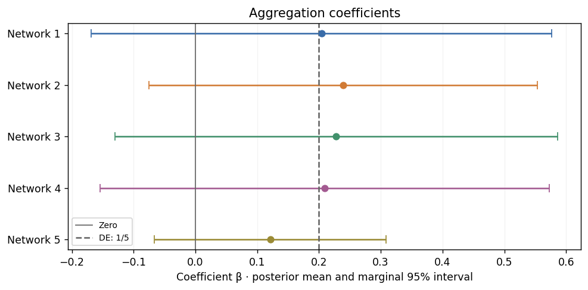
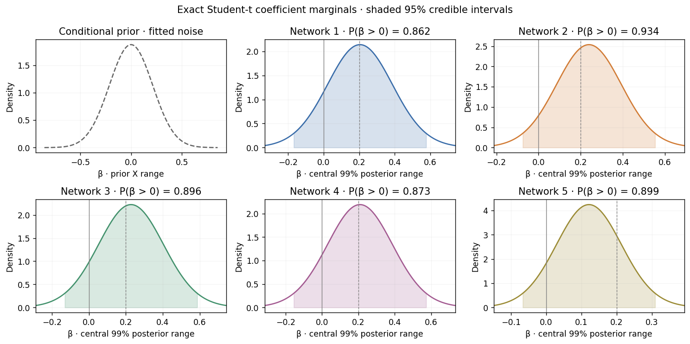
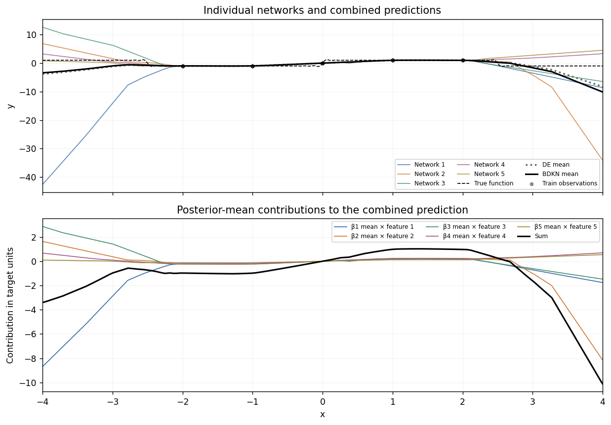
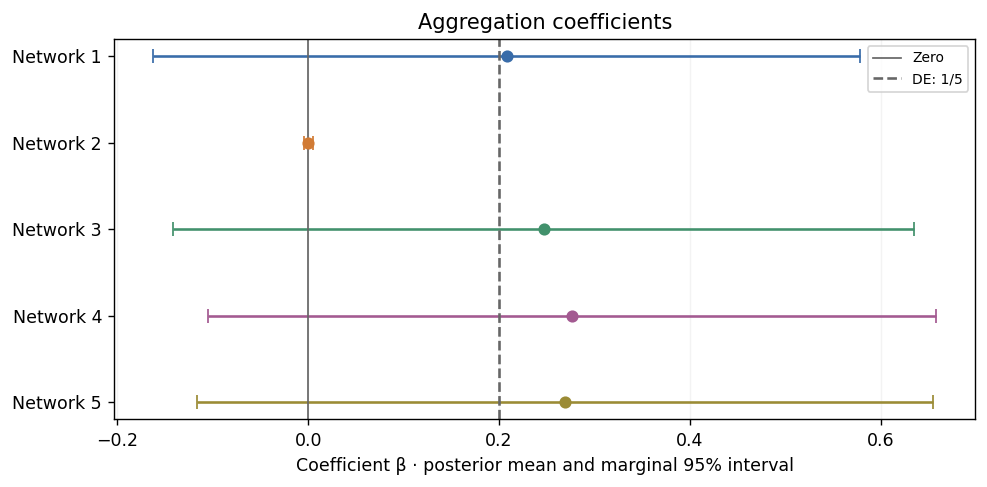
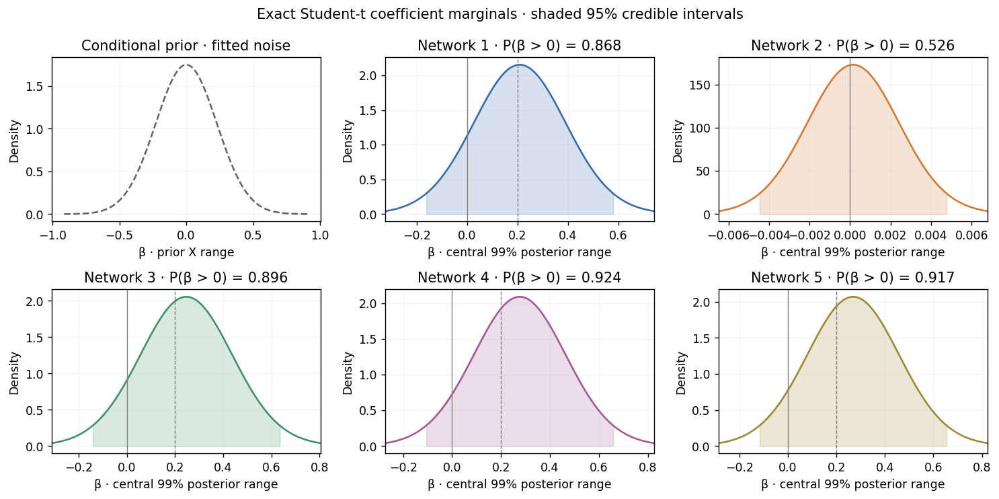
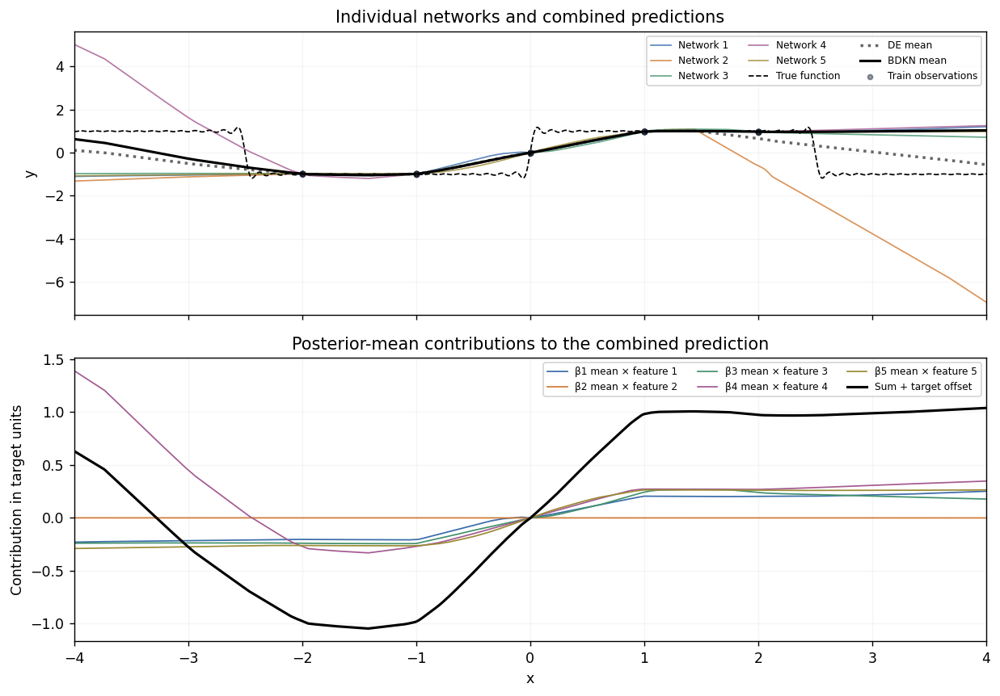

Regression comparison
Download resultsAggregation weights
Coefficients can be negative and need not sum to one. Intervals describe coefficient uncertainty; the dashed reference is DE’s fixed 1/H weight.
BDKN


Each density panel uses its own X range for readability; coefficient intervals above share a common axis. Prior reference conditions on fitted noise. Contribution shares use held-out inputs; test targets are used only for scoring.
| Network | β mean | 95% low | 95% high | P(β > 0) | Contribution share | Test RMSE | Test NLL |
|---|---|---|---|---|---|---|---|
| 1 | 0.20499 | -0.16142 | 0.57139 | 0.86674 | 0.20629 | 1.24833 | 58883.42623 |
| 2 | 0.20321 | -0.04378 | 0.45019 | 0.94766 | 0.19829 | 1.19777 | 13842.83477 |
| 3 | 0.20250 | -0.16348 | 0.56849 | 0.86413 | 0.20069 | 1.22938 | 56464.58887 |
| 4 | 0.19702 | -0.15856 | 0.55260 | 0.86446 | 0.20055 | 1.25845 | 42876.21222 |
| 5 | 0.19261 | -0.07921 | 0.46443 | 0.91957 | 0.19419 | 1.24253 | 34739.66116 |
Functional repulsion · BDKN



Each density panel uses its own X range for readability; coefficient intervals above share a common axis. Prior reference conditions on fitted noise. Contribution shares use held-out inputs; test targets are used only for scoring.
| Network | β mean | 95% low | 95% high | P(β > 0) | Contribution share | Test RMSE | Test NLL |
|---|---|---|---|---|---|---|---|
| 1 | 0.00004 | -0.00010 | 0.00017 | 0.70111 | 0.00225 | 83.28629 | 19508.76114 |
| 2 | 0.33842 | -0.06734 | 0.74419 | 0.94993 | 0.33518 | 1.21718 | 19964.82043 |
| 3 | 0.50767 | 0.18553 | 0.82981 | 0.99868 | 0.50741 | 1.23848 | 36802.58848 |
| 4 | -0.00000 | -0.00014 | 0.00013 | 0.47579 | 0.00023 | 80.44250 | 83662.47390 |
| 5 | 0.15524 | -0.15791 | 0.46840 | 0.83791 | 0.15493 | 1.22084 | 42420.96598 |
Weight repulsion · BDKN



Each density panel uses its own X range for readability; coefficient intervals above share a common axis. Prior reference conditions on fitted noise. Contribution shares use held-out inputs; test targets are used only for scoring.
| Network | β mean | 95% low | 95% high | P(β > 0) | Contribution share | Test RMSE | Test NLL |
|---|---|---|---|---|---|---|---|
| 1 | 0.20406 | -0.16837 | 0.57649 | 0.86182 | 0.38125 | 10.80465 | 565.39470 |
| 2 | 0.23906 | -0.07504 | 0.55315 | 0.93368 | 0.27811 | 6.64367 | 325.34556 |
| 3 | 0.22795 | -0.13065 | 0.58655 | 0.89621 | 0.19885 | 3.25661 | 1289340.75507 |
| 4 | 0.20910 | -0.15474 | 0.57294 | 0.87307 | 0.08700 | 1.54620 | 36479.50218 |
| 5 | 0.12118 | -0.06667 | 0.30902 | 0.89949 | 0.05478 | 1.96689 | 935262.86692 |
First-order repulsion · BDKN



Each density panel uses its own X range for readability; coefficient intervals above share a common axis. Prior reference conditions on fitted noise. Contribution shares use held-out inputs; test targets are used only for scoring.
| Network | β mean | 95% low | 95% high | P(β > 0) | Contribution share | Test RMSE | Test NLL |
|---|---|---|---|---|---|---|---|
| 1 | 0.20815 | -0.16225 | 0.57855 | 0.86780 | 0.19375 | 1.29759 | 51234.96576 |
| 2 | 0.00015 | -0.00446 | 0.00476 | 0.52598 | 0.00026 | 2.03083 | 38209.79254 |
| 3 | 0.24668 | -0.14121 | 0.63456 | 0.89631 | 0.21346 | 1.18502 | 23492.29978 |
| 4 | 0.27640 | -0.10536 | 0.65816 | 0.92393 | 0.34001 | 1.36208 | 50488.88582 |
| 5 | 0.26899 | -0.11627 | 0.65424 | 0.91651 | 0.25253 | 1.24191 | 26387.05187 |